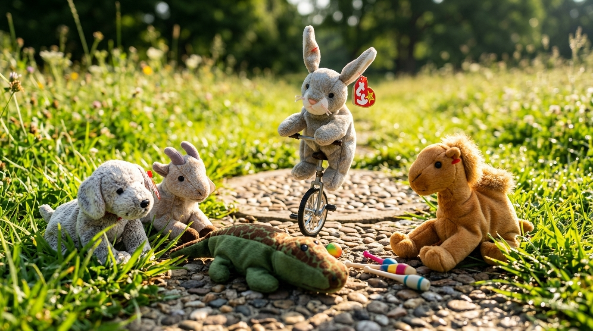
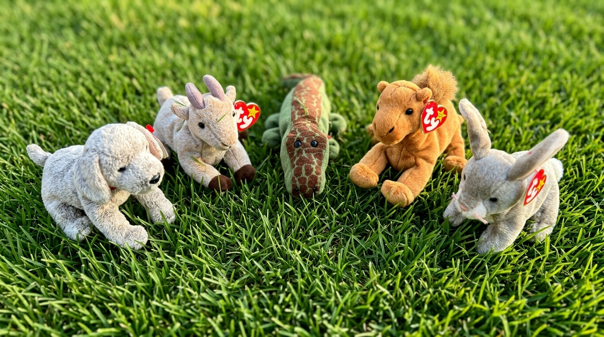

The Great Circular Adventure
Being a Pleasant & Wholesome Tale of the Five Playful Friends
Chapter I — The Unicycle & The Circular Path
On a bright and gilded morning in Oakwood Meadow, five inseparable companions ventured forth into the sunshine. Bounce, a springy bunny rabbit with long expressive ears, hopped onto a slender, single-wheeled unicycle. Balancing with astonishing grace, she pedaled smoothly along a stone pathway shaped in a perfect, circular loop.
"Observe!" giggled Bounce, as her single wheel hummed against the cobblestones. "Because this path is round, no matter how far I travel, every turn brings me gently back to where we began!"
Paw, a light-grey speckled puppy overflowing with enthusiasm, let out a joyful bark and bounded after her. He raced along the entire circuit of the meadow, following the unbroken trail from the foot of the ancient Oak Tree all the way back to its starting root. Beside him, Ali Baba, a tall and golden camel, bounded in high-spirited leaps, clearing the decorative hurdles along the path with effortless agility.

Chapter II — The Splash & The Whirling Wind
Halting near the riverbank to rest, Nile, a gentle green crocodile with dark scaled markings, glided smoothly into the cool stream. Paddling his tail in rhythmic strokes, Nile worked to circulate the refreshing water into every duck pond, lily basin, and winding creek across the meadow.
Meanwhile, upon the grassy knoll, Buck the goat spotted a large, hollow wooden hoop. Lowering his head with playful mischief, Buck gave the hoop a brisk nudge with his smooth grey curved horns. Down the incline it rolled, gathering speed until it stirred the crisp autumn leaves into a swirling cyclone of gold and crimson wind.
Entranced by the dancing vortex of leaves, the five companions seated themselves in a quiet semicircle upon the velvet grass, forming a neat half-circle to marvel at the swirling breeze together.

Chapter III — The Work of Recycling & The Life Cycle
When the breeze at last grew still, Paw noticed several discarded tin cans and paper wrappers left near the meadow pavilion. "We must keep our woodland home pristine," barked Paw, gently rolling a fallen bottle with his nose.
"We shall recycle them!" declared Ali Baba. Working in joyful harmony, Nile carried the containers in his snout, Buck rolled the cardboards, and Bounce tossed them neatly into the sorting bins. Using their clever minds, they even gathered leftover timber to fashion new hurdles for their running track.
As dusk settled softly over the meadow and stars began to glitter, the five tired friends curled up together under the shelter of the Oak Tree. Bounce rested her head against Nile's soft green side. "Is it not wonderful," she murmured softly, "how all of nature moves in a peaceful cycle—from sunrise to sunset, and from play to rest, only to begin anew tomorrow?"